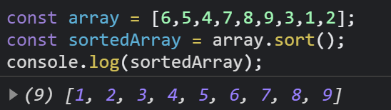

Javascript Array methods | part 1

Hello there! I'm Miheer today I'll be writing on javascript array methods. This is very important topic to know about what are the methods by which we can manipulate or do a CRUD operations on Arrays.
If anyone dont know what is an array. Array data structure, or simply an array, is a data structure consisting of a collection of elements or a variable which stores a more than one values at a time. e.g List of names, roll no. etc.
Now next we are learning about array methods there are plenty of array mentods built in for simplifying our life to work on arrays. For now we are focusing on mainly used and important methods below.
concat()
The concat() method or concatination method simply allow us to join two or more arrys and creates new array of them, without changing values of previous arrays. Lets see how it by example

As you can see in above example we create two arrays, array and array2 and join and store them in new variable called concatArray. Lets move to our next method
join()
The join() method also joins the elements of itself. And return an string.
All elements will store in one string but we can saperate it by specified separator. like - , space, / etc.
Also it does not affect the old array.
In above example we joining our array elements by hyphen(-) in one string and stores in dateFormat vaiable. Getting a string output.
slice()
Slice function selects number of elements we want to extract from an array and return new array of elements.
slice function has two index arguments first is start and second is end argument, In which we can specify part of an array elements we want to extract.
As you can see, we gave two arguments to the slice to extract elements from index 1 to 4. and we get elements upto 3rd index.
splice()
As we seen slice method which takes or extract some part of array and return new array. Like that splice() function also has power to extract as well as adds elements from an array. This function changes(overwrites) the original array.
splice() has three or more arguments from which first argument takes at which index we want to add or remove element, second howmuch elements we want to remove or add, and third is elements itself which adds in array.
As you can see the splice function overwrites the main variable stack in which the first argument takes index of 3 , how many elements to remove argument has 0 and which elements we want to add are "Node" and "express". It means At position 3, remove 0 elements and add "node" and "express".
sort()
sort() function sorts a elements of an array. The default sorting of numbers and alphabates in array is ascendin.
Sort() function is very usefull if we have array of some user ID's and we want to sort them.
As you can see in above example we stores an random numbers in array and using sort function we get a ascending ordered array.
That's it for this part folks, I hope you gain a little bit knowledge on array methods. Its my beginner attempt to right a blogs and all. If some of you don't understands a concepts mentioned above you can feel free to contact me on Twitter or LinkeIn to ask questions.
Thank you, Keep Conding 🙂